Epreuve E4 🎓
Qu'est-ce que l'épreuve E4 ?
L'épreuve E4 du BTS SIO est une épreuve professionnalisante visant à évaluer les compétences
acquises
par le candidat dans le domaine de la conception et de la maintenance de solutions
informatiques,
propres à chacun des parcours du diplôme. Ces compétences sont évaluées à partir de situations
professionnelles, permettant de mesurer la capacité du candidat à :
- Produire ou adapter une solution applicative ou d'infrastructure.
- Apprécier la qualité de la solution obtenue par rapport à la demande initiale et aux
contraintes de
production.
- Traiter les imprévus qui caractérisent de nombreuses activités du domaine.
L'objectif principal de cette épreuve est de mettre en avant les compétences opérationnelles du
candidat, démontrant sa capacité à intervenir efficacement dans le processus de conception, de
réalisation, et de maintenance de solutions informatiques, tout en tenant compte des exigences
spécifiques à son parcours de formation. En somme, l'épreuve E4 se positionne comme une
évaluation
concrète et contextualisée des aptitudes professionnelles du candidat, reflétant ainsi les
enjeux
pratiques du secteur informatique appliqué aux organisations.
Tableau de synthèse:
Réalisations en milieu professionnel en cours de première année 👨💻
Contexte
- Objectif Principal : Développer un système de suivi simple permettant de répertorier les prospects, en les classant selon le canal de prospection (physique ou en ligne).
- Fonctionnalités Essentielles : Le système devait offrir la possibilité d'ajouter de nouveaux prospects, de les modifier, et de les supprimer selon l'évolution de la relation commerciale.
- Technologies Utilisées : Le projet a été réalisé en utilisant une combinaison de technologies basiques, notamment HTML, CSS pour la structure et le style, PHP pour le traitement côté serveur, et jQuery pour dynamiser l'affichage des prospects.
- Interface Conviviale : Mise en place d'une interface conviviale et intuitive pour faciliter la saisie des informations des prospects.
- Tri Sélectif : Intégration d'un mécanisme de tri permettant de distinguer les prospects selon la méthode de prospection, qu'elle soit physique ou en ligne.
- Gestion Dynamique : Utilisation de jQuery pour afficher dynamiquement les prospects et leurs informations en temps réel, facilitant ainsi la consultation et la gestion.
- Fonctions de Modification et Suppression : Implémentation de fonctionnalités permettant de modifier et de supprimer des entrées en fonction de l'évolution du statut des prospects.
- HTML & CSS : Structuration et stylisation de l'interface utilisateur pour une expérience visuelle optimale.
- PHP : Traitement côté serveur pour la gestion des données, la création, la modification et la suppression des prospects.
- jQuery : Utilisation de cette bibliothèque JavaScript pour simplifier et dynamiser l'affichage des informations des prospects.
Description
I. Présentation de l'entreprise
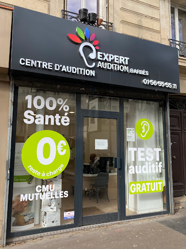
Pendant mon parcours professionnel, j'ai eu l'opportunité de travailler chez Expert Audition, un établissement dédié à l'audition situé au 23 Boulevard Barbès, Paris 18ème.
Expert Audition se distingue par son approche personnalisée et professionnelle en matière de soins auditifs.
En tant que spécialiste indépendant, l'entreprise offre des tests d'audition gratuits et accompagne les clients dans le choix de solutions auditives adaptées.
Avec une Audioprothésiste D.E sur place et une collaboration avec toutes les grandes marques d'aides auditives, Expert Audition propose une variété de choix pour répondre aux besoins individuels.
Le 100% santé est au cœur de la démarche d'Expert Audition, assurant que les appareils de classe I sont accessibles sans reste à charge. De plus, la gamme inclut des appareils rechargeables ultradiscrets, offrant une qualité d'écoute optimale.
II. Réalisation
Au cours de mon expérience au sein de l'entreprise axée sur la prospection physique et en ligne, j'ai été mandaté pour concevoir un système de suivi des prospects...
Caractéristiques du Projet :
Principales Réalisations :
Technologies Employées :
Création d'une page de connexion sécurisée pour l'accès au système de suivi des prospects
Compétences mobilisés

Mettre à disposition des utilisateurs un service informatique
Réaliser les tests d’intégration et d’acceptation d’un service:
(extrait document test et injection sql avec Zap OWASP)
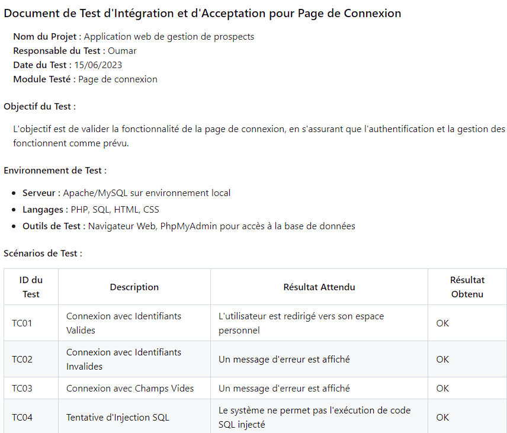
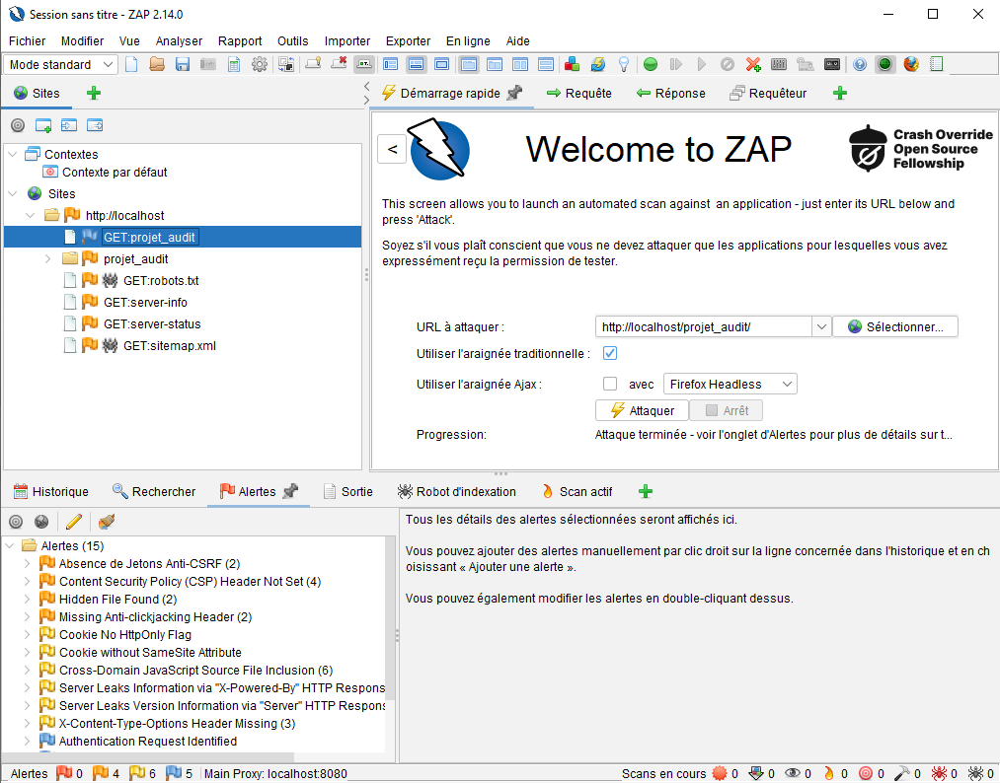
Déployer un service :
(utilisation de fileZila pour extraire les fichiers)
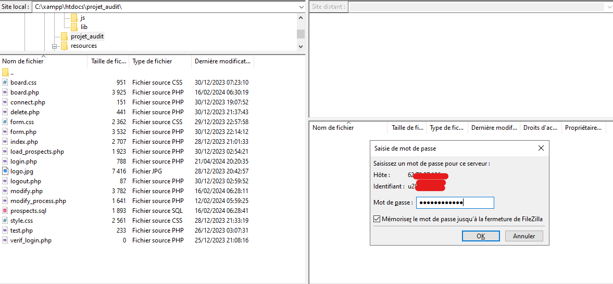
Description
I. Interface de Connexion
J'ai d'abord créé le formulaire de connexion. Il comprend des champs pour saisir le nom d'utilisateur et le mot de passe. Aucune exigence n'était spécifiée pour le design, j'ai donc opté pour un style très simple.
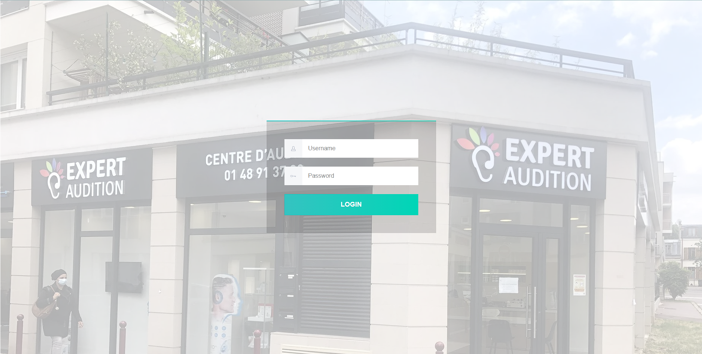
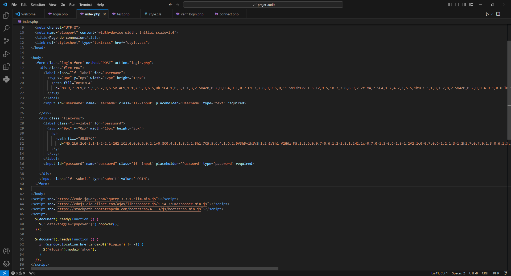
II. Gestion des Utilisateurs
Par la suite, il a donc fallu relier le formulaire de connexion à une base de données. La base de données contient les informations des utilisateurs et leurs identifiants (qui seront récupérés pour la validation de la connexion) sont créés à cet effet.
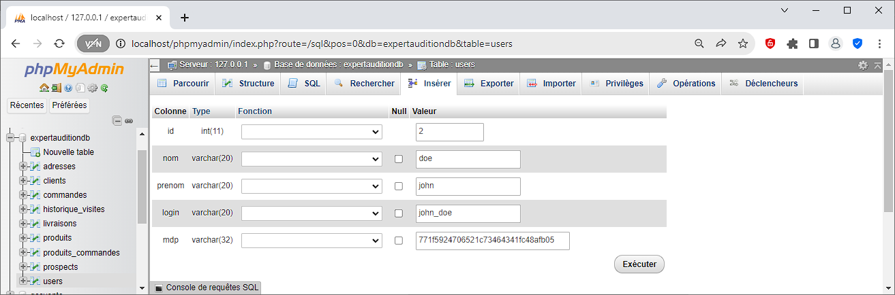
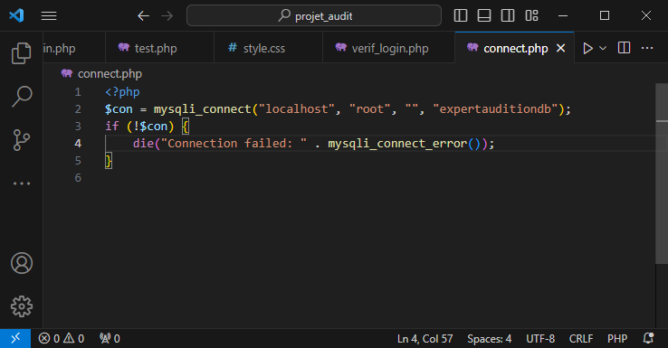
III. Sécurité
J'ai dû prendre des mesures de sécurité, telles que l'utilisation de requêtes préparées, notamment par la méthode `mysqli_real_escape_string`, pour traiter les variables `$login` et `$password` afin de prévenir les injections SQL. De plus, j'ai employé la fonction de hachage cryptographique MD5 pour sécuriser le stockage du mot de passe. En outre, j'ai effectué des tests afin d'identifier d'éventuelles failles de sécurité, utilisant pour ce faire OWASP ZAP.
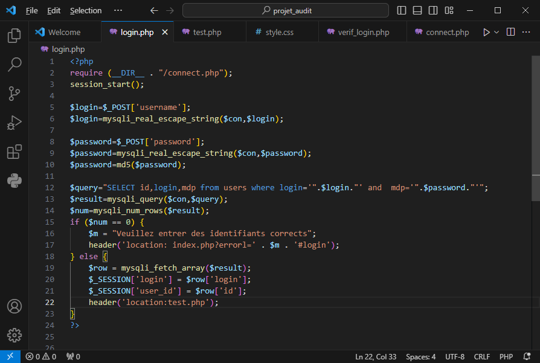
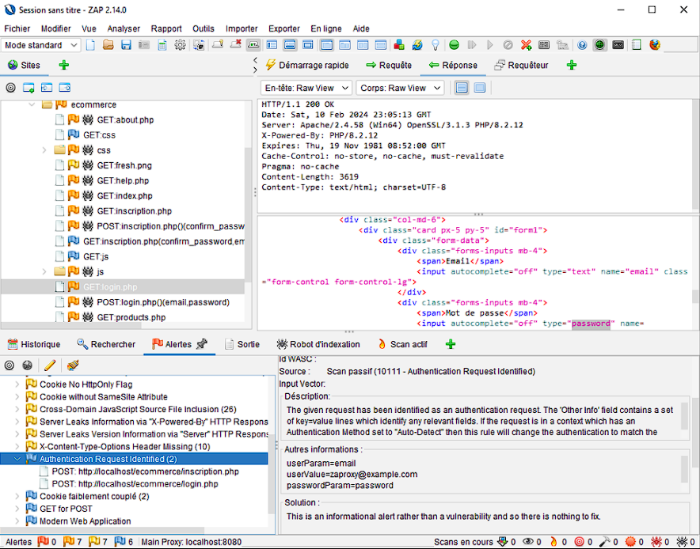
Voir le projet
Développement de Formulaire ajout et de modification prospect
Compétences mobilisés
Mettre à disposition des utilisateurs un service informatique
Réaliser les tests d’intégration et d’acceptation d’un service:
(extrait document test et injection sql avec Zap OWASP)
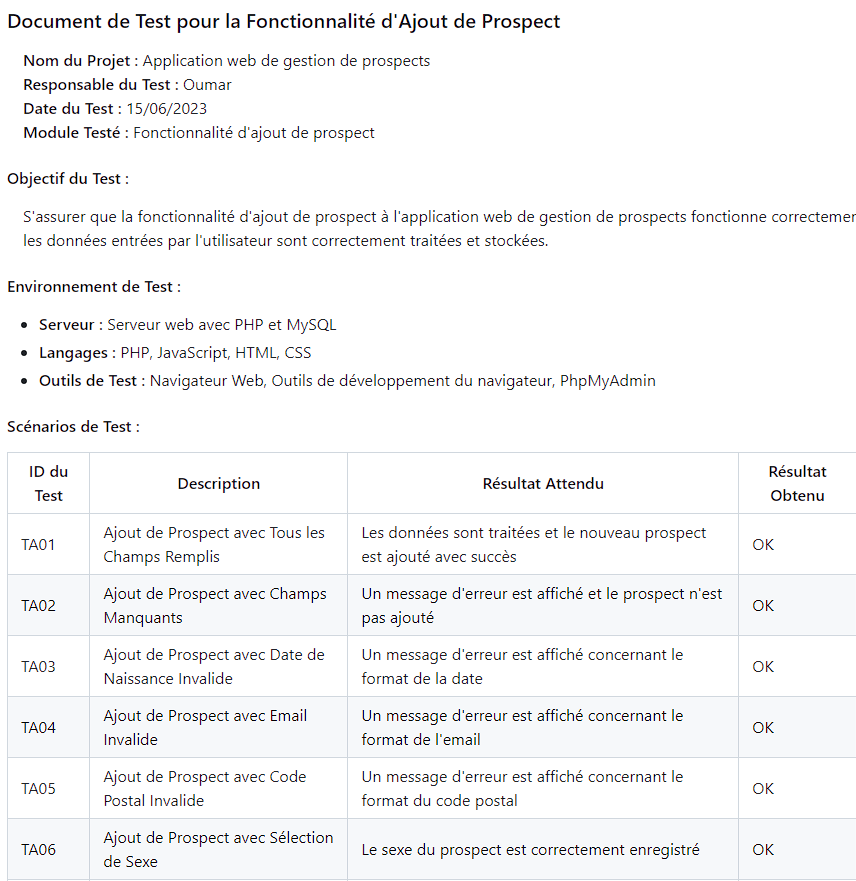
Déployer un service :
(utilisation de fileZila pour extraire les fichiers)
Description
I. Front end
J'ai créé une interface web pour ajouter facilement des prospects, comprenant des champs pour les informations essentielles et des options de sexe et de type de prospection. J'ai veillé à ce que le formulaire soit intuitif et visuellement attrayant, avec une navigation simple. Pour assurer une cohérence visuelle j'ai utilisé la même feuille de style pour la page de modification.
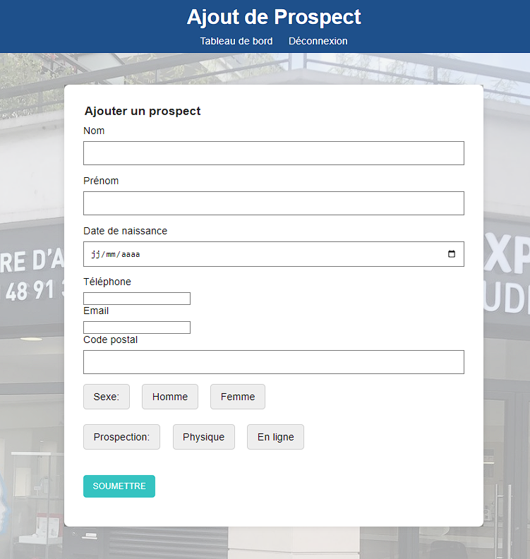
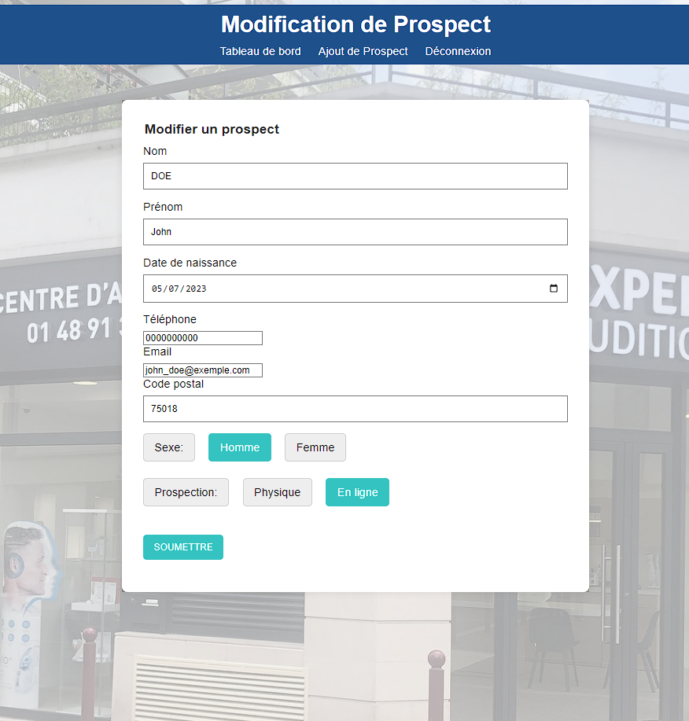
II. Back-end
J'ai développé un script PHP pour ajouter et mettre à jour des prospects dans une base de données. Après vérification de l'authentification de l'utilisateur, le script traite les données soumises via le formulaire, les sécurise contre les injections SQL, puis exécute les requêtes d'insertion ou de mise à jour. Des messages appropriés sont affichés selon le succès ou l'échec des opérations.
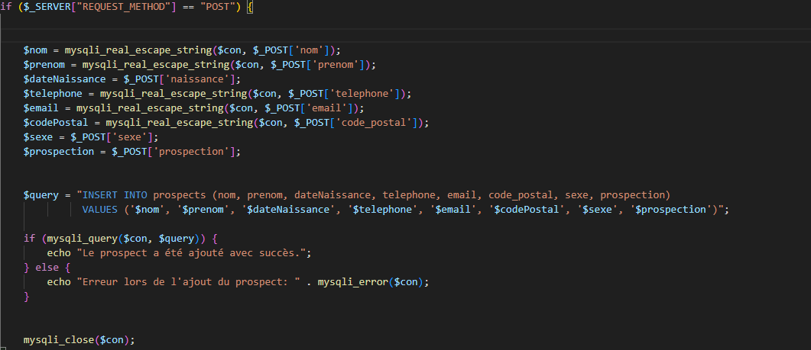

III. Structure de la base de donnée
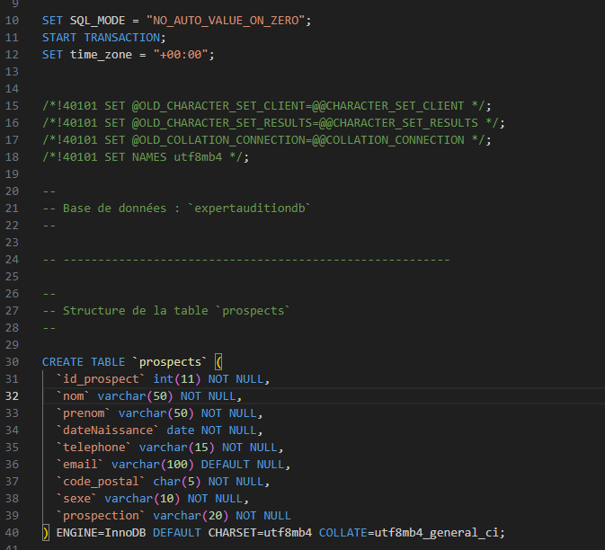
Voir le projet
Conception tableau de bord
Compétences mobilisés
Mettre à disposition des utilisateurs un service informatique
Réaliser les tests d’intégration et d’acceptation d’un service:
(extrait document test et injection sql avec Zap OWASP)
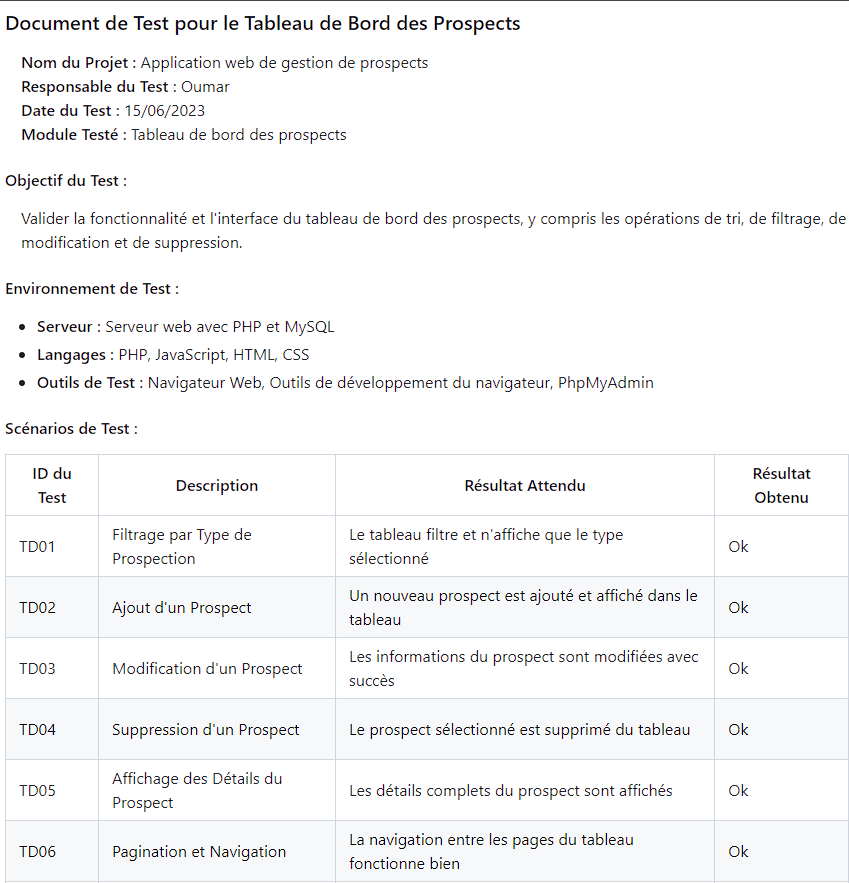
Déployer un service :
(utilisation de fileZila pour extraire les fichiers)
Description
I. Front end
J'ai conçu ce tableau de bord pour gérer efficacement les données des prospects. Il présente un menu déroulant permettant de filtrer les prospects par type de prospection et affiche un tableau structuré listant les informations clés telles que l'ID, le nom, le prénom, la date de naissance, les coordonnées, et d'autres détails pertinents. Chaque ligne offre des options pour modifier ou supprimer des entrées, facilitant la mise à jour des données en temps réel. Avec un total affiché en haut à droite, je peux rapidement voir le nombre de prospects actuels.
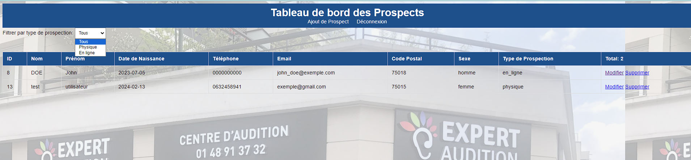
II. Extraits de codes
J'ai mis en place un tableau de bord dynamique pour la gestion des prospects avec un script PHP et AJAX. Mon script PHP interroge la base de données et filtre les prospects selon leur type de prospection, renvoyant les résultats en JSON. Mon JavaScript, avec jQuery, utilise ces données pour remplir le tableau sur la page, permettant aux utilisateurs de filtrer dynamiquement et de gérer les entrées avec des options de modification et de suppression. En cas d'erreur, des messages sont affichés pour faciliter le dépannage.
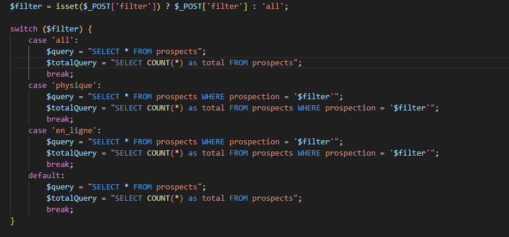
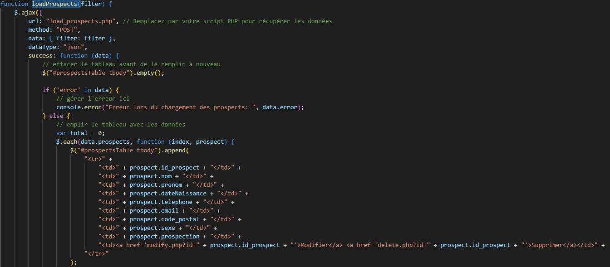
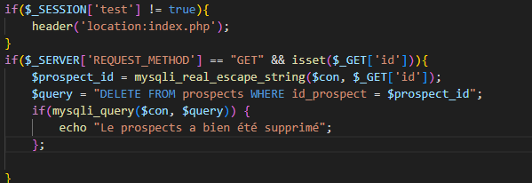
Voir le projet
Documentation Technique
Compétences mobilisés
Mettre à disposition des utilisateurs un service informatique
(Accompagner les utilisateurs dans la mise en place d’un service)
Travailler en mode projet
(Planifier les activités)
Description
I. Planification
Pour orchestrer le développement de mon projet et partager l'avancement avec mon tuteur, j'ai intégré l'outil Trello dans mon flux de travail. Cet outil de gestion de projet visuel me permettait non seulement de planifier mes tâches et de suivre leur progression, mais offrait aussi une transparence totale à mon tuteur, lui permettant de voir en temps réel où j'en étais dans mes activités.
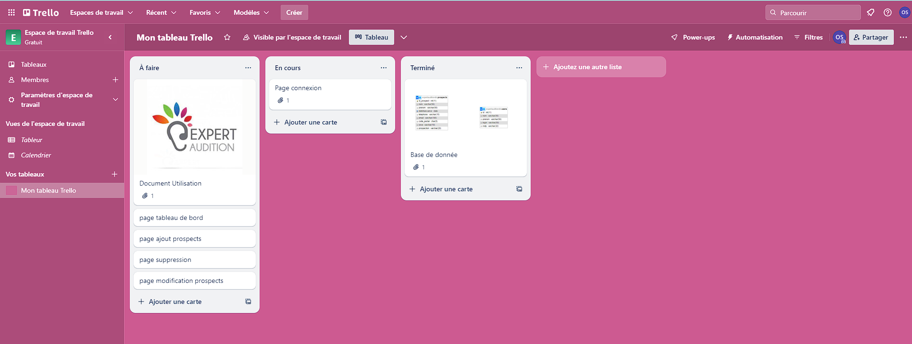
II. Manuel d'utilisation
J'ai rédigé un manuel d'utilisation pour détailler les fonctionnalités et guider les utilisateurs à travers l'interface que j'ai codée. Le but de ce manuel est de faciliter la compréhension et l'adoption de l'outil, en fournissant des instructions claires sur comment gérer les prospects, utiliser les filtres et interagir avec le tableau de bord. Ce guide vise à rendre les utilisateurs autonomes et à minimiser le besoin d'assistance directe, permettant ainsi une meilleure efficacité opérationnelle.
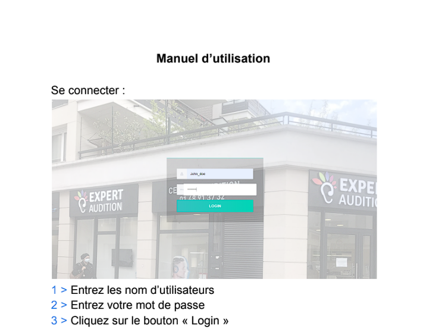
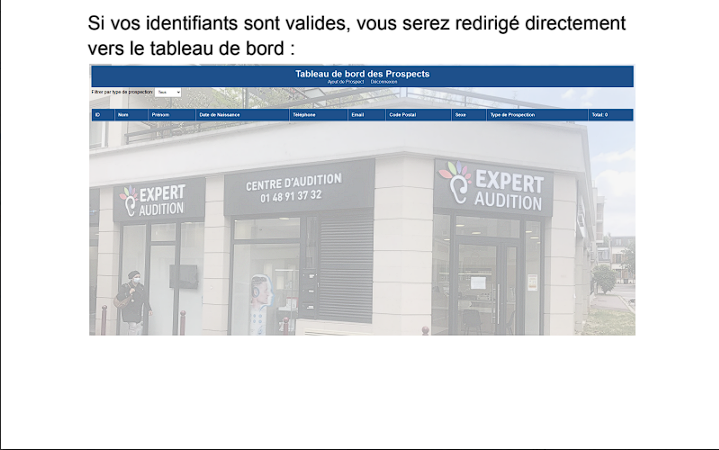
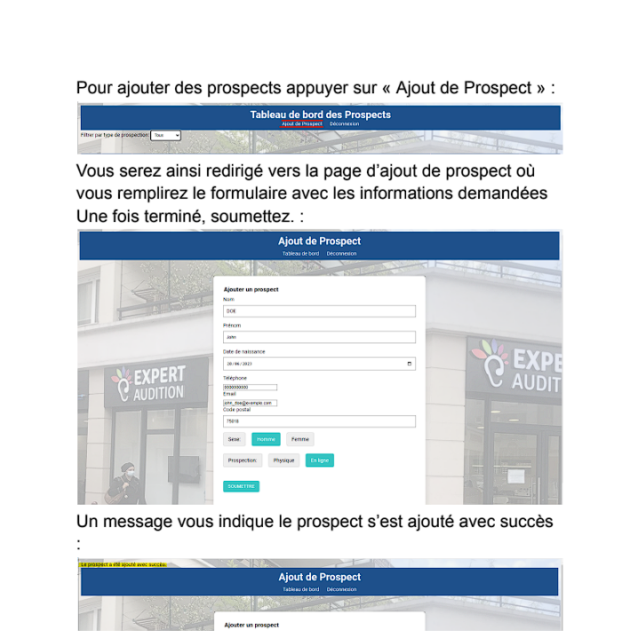
Installation de windows 10
Compétences mobilisés
Mettre à disposition des utilisateurs un service informatique
(Déployer un service)
Description
Pour le développement de ce projet, j'ai également pris en charge la configuration technique nécessaire, y compris l'installation de Windows 10 sur un PC qui m'a été prêté spécifiquement pour cette tâche. Cette étape était cruciale pour me fournir un environnement stable et fiable pour coder, tester les fonctionnalités de mon application et rédiger le manuel d'utilisation associé. Cela a assuré que je disposais de toutes les ressources nécessaires pour mener à bien mon projet dans les meilleures conditions.
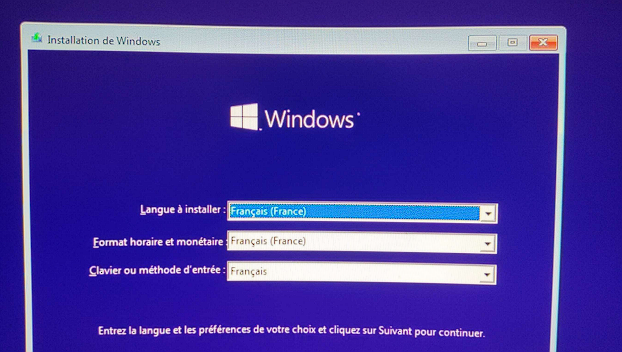
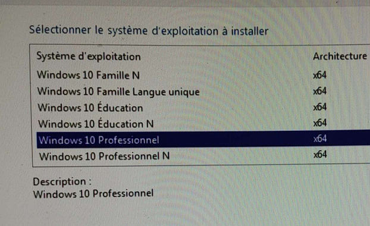
Réalisations en milieu professionnel en cours de seconde année 👨💻
Présentation de l'entreprise "M10"
J'ai eu l'opportunité de collaborer avec Bakary MANE, un jeune entrepreneur et développeur spécialisé dans la création de sites web et d'applications pour divers clients. Actuellement, il se consacre au développement de M10 Driver, une application innovante de service VTC visant à rendre le transport privé accessible à tous. Cette entreprise reflète l'ambition de Bakary d'apporter des solutions technologiques avancées et accessibles dans le secteur du transport.
Réalisation
Dans le cadre de ce projet, l'objectif était de développer un site web pour mettre en avant une gamme de sites web et d'applications, sans intégrer de transactions commerciales directes. Le site a été conçu pour permettre aux visiteurs de découvrir les produits numériques proposés, de se renseigner sur l'entreprise et de leur offrir la possibilité de prendre rendez-vous pour des consultations personnalisées.
Suite à une analyse détaillée des besoins, j'ai sélectionné une pile technologique éprouvée pour mener à bien ma mission. Le développement a été réalisé en utilisant HTML et CSS pour la structure et le style, Bootstrap pour un design réactif et moderne, JavaScript pour l'interactivité côté client, MySQL pour la gestion de la base de données et PHP pour le traitement côté serveur.
Le design du site a été conçu pour évoquer un environnement e-commerce, mais sans la complexité des systèmes de transaction. En mettant l'accent sur une interface utilisateur claire et une expérience de navigation intuitive, nous avons réussi à créer un espace où les produits numériques sont les vedettes. L'esthétique épurée et les éléments de design fonctionnel facilitent l'accès et la découverte des diverses offres par les visiteurs, encourageant l'interaction et l'engagement avec le contenu.
Le site vitrine est organisé autour de cartes de produits distinctives, permettant aux utilisateurs de rapidement identifier et sélectionner les solutions qui les intéressent.
Capture d'écran du site
Mes missions
Planification des tâches en utilisant Trello
Compétences mobilisés
Travailler en mode projet
(planifier les activités)
Description
Pour orchestrer le développement de mon projet et partager l'avancement avec mon tuteur, j'ai intégré l'outil Trello dans mon flux de travail. Cet outil de gestion de projet visuel me permettait non seulement de planifier mes tâches et de suivre leur progression, mais offrait aussi une transparence totale à mon tuteur, lui permettant de voir en temps réel où j'en étais dans mes activités
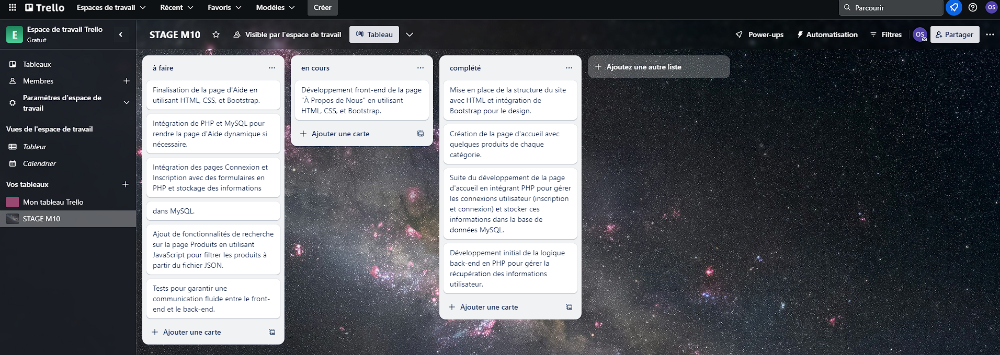
Développement de la Base de Données et Modélisation
Compétences mobilisés
Répondre aux incidents et aux demandes d’assistance et d’évolution
(Traiter des demandes concernant les applications,Collecter, suivre et orienter des demandes )
Développer la présence en ligne de l’organisation
(Participer à l’évolution d’un site Web exploitant les données de l’organisation.)
Description
Durant mon stage, j'ai eu l'opportunité de concevoir et développer une base de données pour gérer les informations clients de l'entreprise. Cela impliquait la création de schémas de base de données, le choix des types de données appropriés et la mise en place des relations entre les tables.
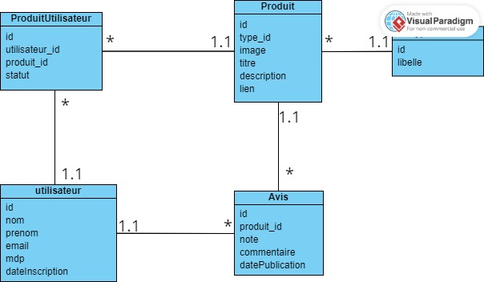
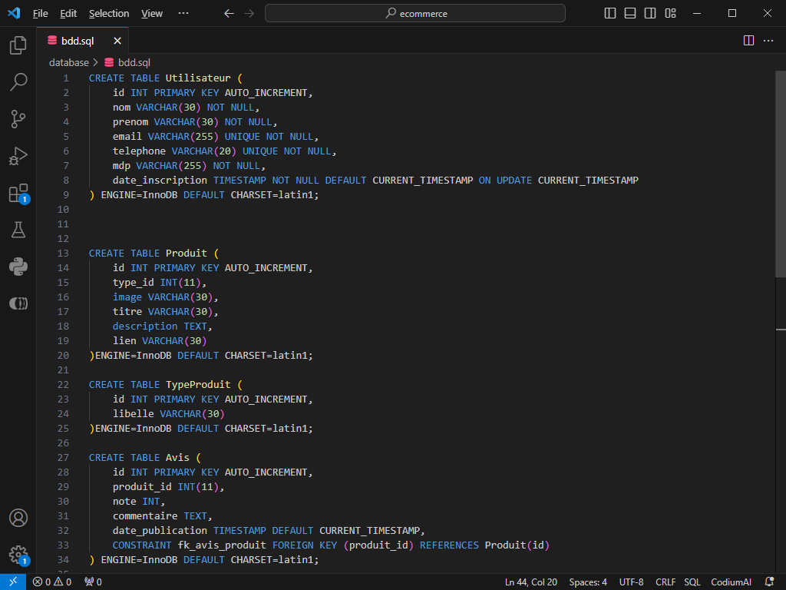
Développement Front-end
Compétences mobilisés
Répondre aux incidents et aux demandes d’assistance et d’évolution
(Traiter des demandes concernant les applications,Collecter, suivre et orienter des demandes )
Développer la présence en ligne de l’organisation
(Participer à l’évolution d’un site Web exploitant les données de l’organisation.)
Développement Front-End
I. Conception de l'Interface avec HTML5 et Bootstrap
J'ai conçu l'interface utilisateur de la vitrine de site en utilisant HTML5, en adhérant aux principes de l'accessibilité et du design réactif. Bootstrap a été un outil clé pour créer une expérience cohérente sur tous les appareils.
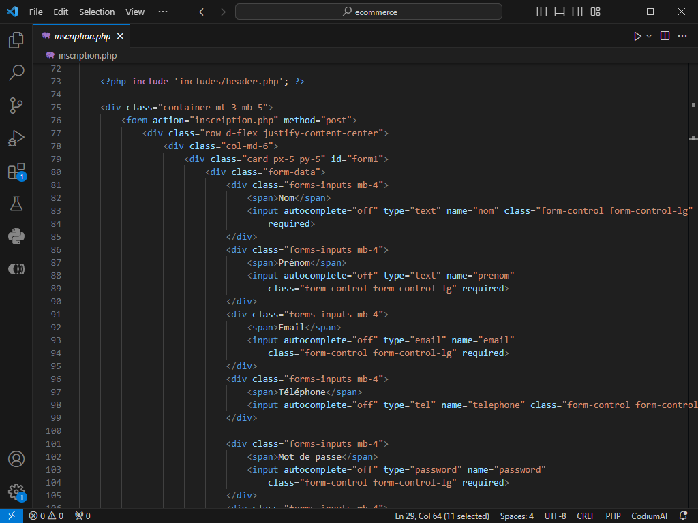
II. Style et Personnalisation avec CSS3
J'ai personnalisé l'intéractions avec les "cards" de produits et des pages détaillées en utilisant CSS3, en mettant l'accent sur l'expérience utilisateur et en assurant que le site soit esthétiquement agréable.
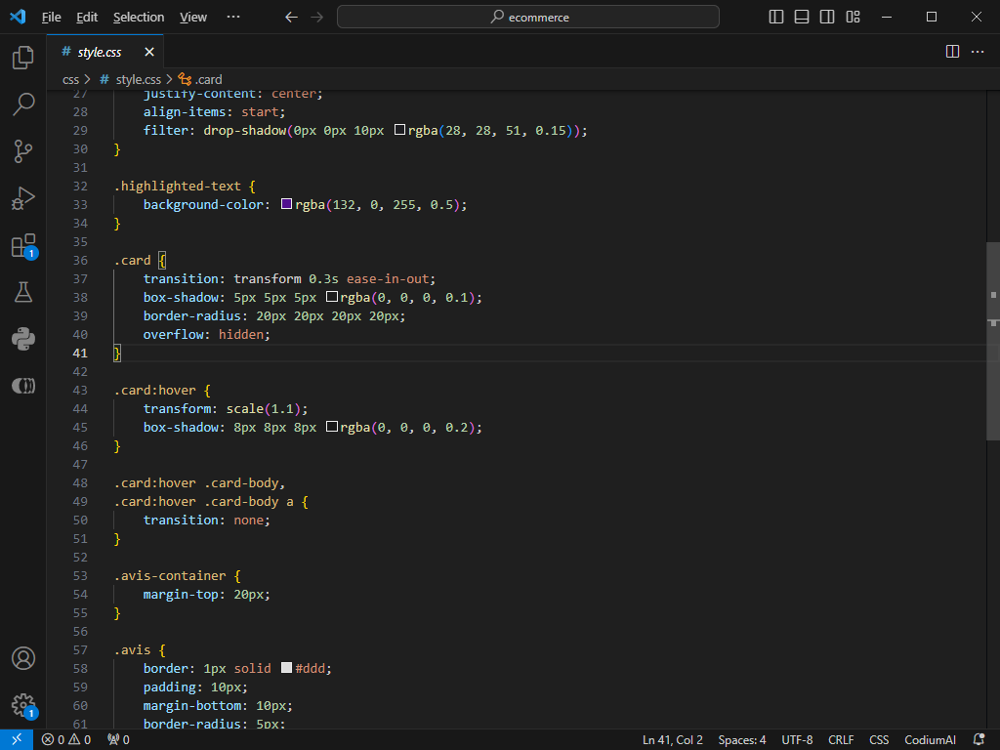
III. Dynamisme avec JavaScript
L'utilisation de JavaScript a permis de rendre le site interactif, notamment pour la navigation entre les différents types de produits.
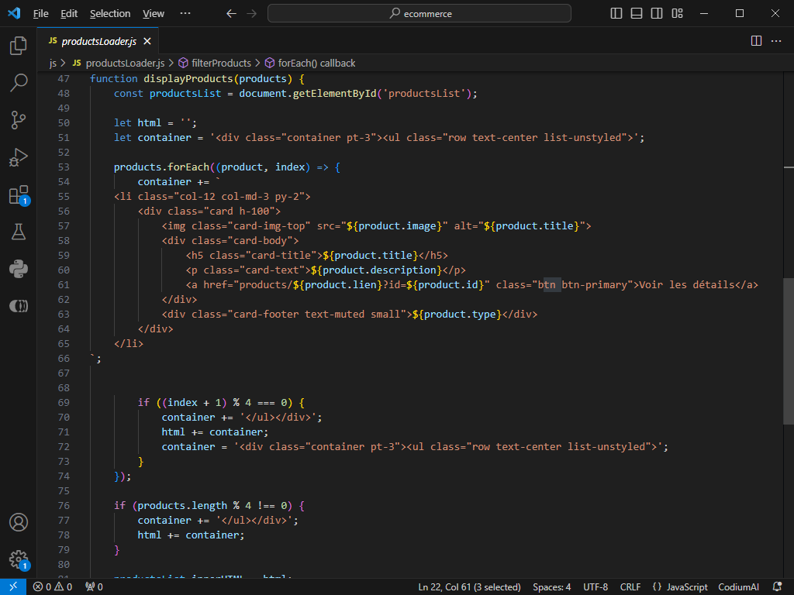
Voir le projet
Développement Back-end et Intégration
Compétences mobilisés
Gérer le patrimoine informatique
Mettre en place et vérifier les niveaux d’habilitation associés à un service:
(extrait de code implémentant des niveau d'habilitation pour l'accès au commentaire)
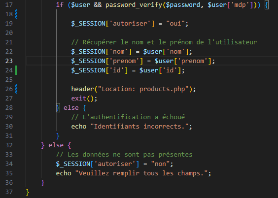
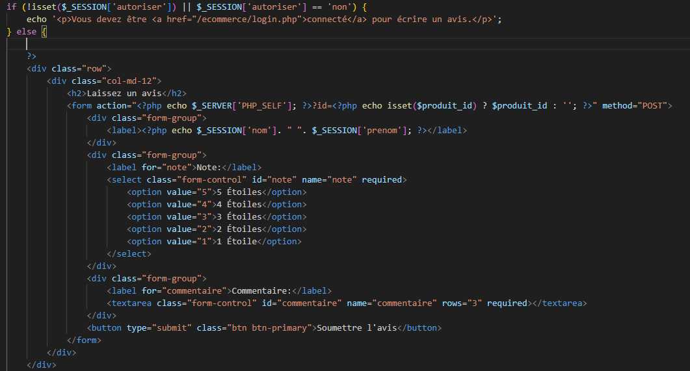
Répondre aux incidents et aux demandes d’assistance et d’évolution
(Collecter, suivre et orienter des demandes)
Développement Back-End et Intégration
I. Intégration de la Base de Données avec PHP
J'ai intégré une base de données relationnelle pour stocker et organiser les données des produits et des utilisateurs. J'ai utilisé PHP pour écrire des requêtes préparées, assurant ainsi la sécurité et l'efficacité de l'accès aux données.
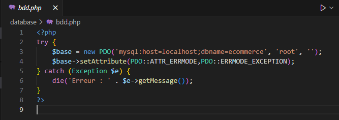
II. Gestion des Requêtes et Réponses JSON
En exploitant le format JSON, j'ai facilité l'échange de données entre le serveur et le client. Ce format est utilisé pour la récupération des produits et l'affichage des avis des utilisateurs sur le site.
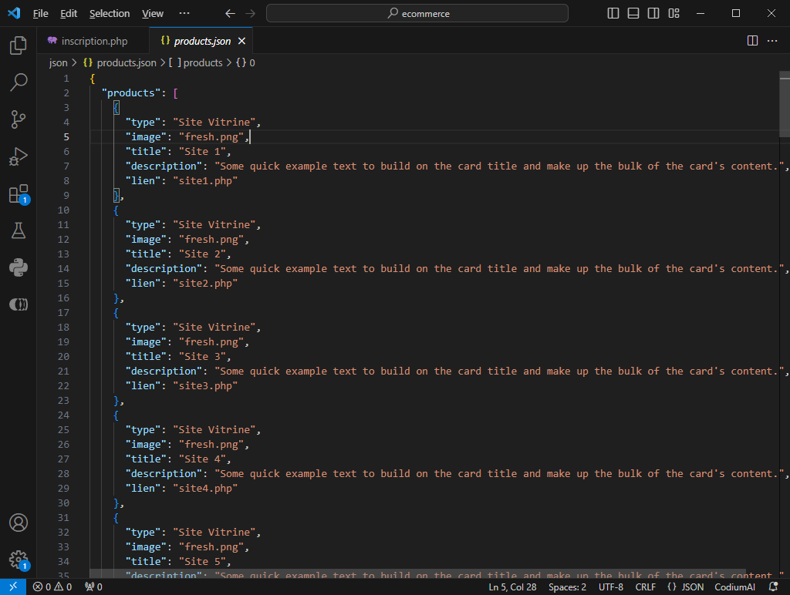
III. Authentification des Utilisateurs et Gestion des Sessions
Le système d'authentification permet aux utilisateurs de se connecter et de commenter les produits. J'ai implémenté la gestion des sessions pour maintenir l'état de connexion à travers les différentes pages du site.
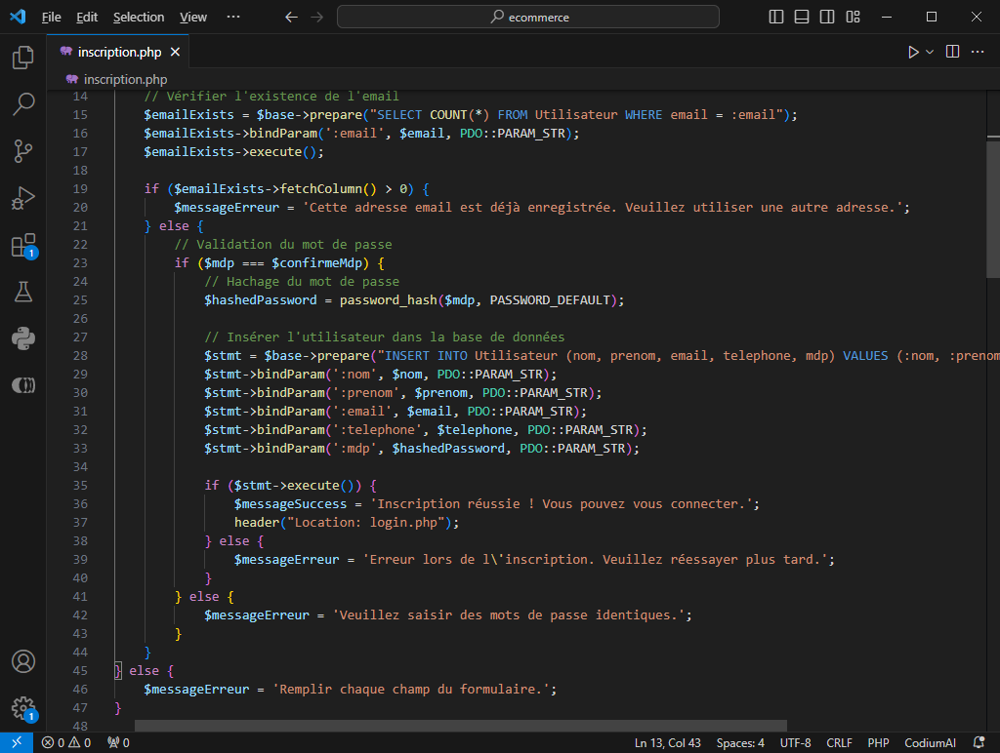
IV. Formulaire d'Inscription et Validation des Données
J'ai mis en place un formulaire d'inscription sécurisé, avec validation côté serveur pour les données entrées par l'utilisateur, assurant ainsi l'intégrité et la confidentialité des informations.
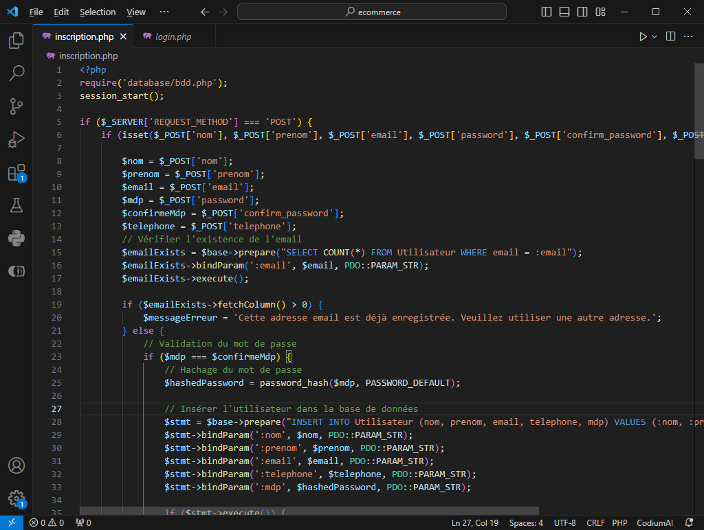
V. Gestion des Avis Produits
J'ai mis en place un système pour gérer les avis des utilisateurs sur les produits. Ce système permet de récupérer l'ensemble des avis, compter le nombre d'avis pour chaque produit, et permettre aux utilisateurs connectés de poster de nouveaux avis.
J'ai utilisé PHP et MySQL pour la manipulation des données. Les requêtes préparées ont été employées pour prévenir les injections SQL, assurant ainsi la sécurité des interactions avec la base de données. De plus, les avis sont affichés en temps réel grâce à un traitement côté serveur qui renvoie les données au format JSON.
Exemple de code PHP pour la récupération et l'insertion des avis :
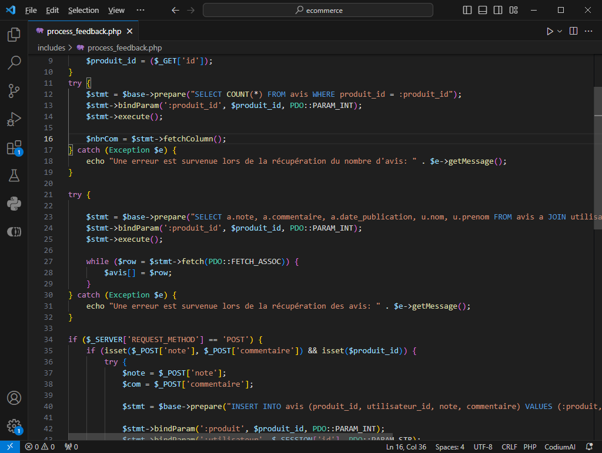
Voir le projet
Documentation Technique
Compétences mobilisés
Gérer le patrimoine informatique
Recenser et identifier les ressources numériques :
(capture doc technologique simplifié)
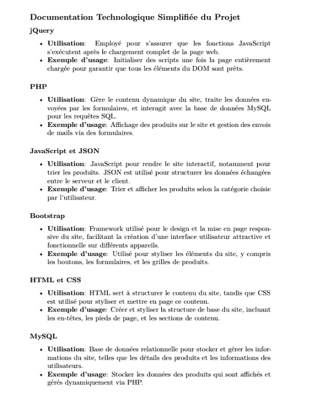
Gérer des sauvegardes:
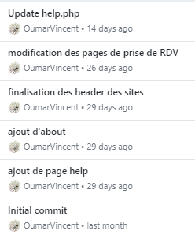
Travailler en mode projet
Analyser les objectifs et les modalités d’organisation d’un projet :
(extrait synthèse de besoin)
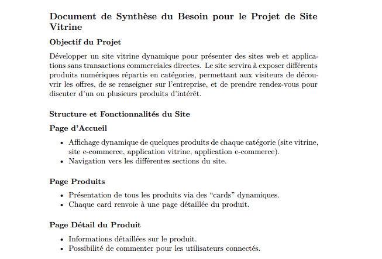
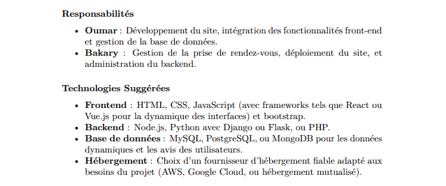
Évaluer les indicateurs de suivi d’un projet et analyser les écarts :
(extrait compte rendu hebdomadaire)
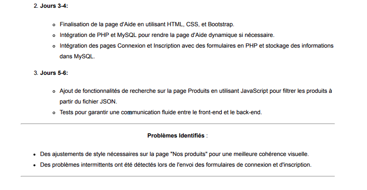
Mettre à disposition des utilisateurs un service informatique
Réaliser les tests d’intégration et d’acceptation d’un service :
(extrait document test)
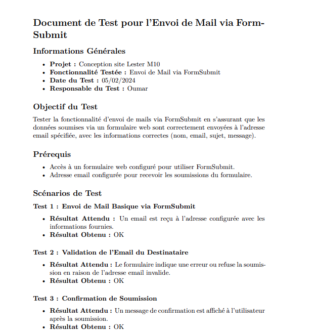
Accompagner les utilisateurs dans la mise en place d’un service :
(extrait rapport)

Documentation Technique du Projet
Au cours de la conception du site Lester M10, j'ai élaboré une documentation technique pour accompagner le développement et assurer la maintenance future du site. Cette documentation couvre les tests effectués pour valider les fonctionnalités, les choix technologiques stratégiques, la gestion des ressources, ainsi qu'une vue d'ensemble architecturale du site.
La documentation comprend les éléments suivants :
- Une série de tests pour assurer le bon fonctionnement du code et la sécurité.
- Une explication détaillée des technologies utilisées, y compris les frameworks, les bibliothèques et les outils de développement, justifiant leur choix en fonction des besoins et des objectifs du projet.
- Un schémas conceptuel détaillant l'architecture du site, y compris des relations entre les différentes parties du système.
- Une synthèse des besoins qui a orienté toutes les étapes de conception et de développement du projet.
Ces documents servent de référence pour le développement actuel et les évolutions futures du site, assurant la continuité et la qualité du projet.
Voir les extraits